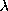

Computer Science 591i
Substitution, Free and Bound Variables
The function FV finds the free variables of a term
A Formal Definition of Substitution
Some Lemmas Relating to Substitution
In the last lecture we introduced the  -calculus as
providing not only theoretical characterisation of computation but as being
the basis a rigorous characterisation of a class of programming languages called
functional programming languages. It was, we alleged, the case that
it is possible to verify programs written in such languages in a simple way
related to ordinary mathematical proof.
-calculus as
providing not only theoretical characterisation of computation but as being
the basis a rigorous characterisation of a class of programming languages called
functional programming languages. It was, we alleged, the case that
it is possible to verify programs written in such languages in a simple way
related to ordinary mathematical proof.
We can make our understanding of the role of the -calculus more precise as follows:
- A program is an expression Eprg, say,
of the -calculus
- A data-set is also an expression Edata
of the -calculus.
- Running a program Eprg
with a given data-set Edata
corresponds to forming the application
(EprgEdata)
and then using reduction rules to transform that application into a
simple form that can reasonably be considered as the result of the computation.
We gave a preliminary definition of beta-reduction, and mentioned
delta-reduction as "working out" applications involving constants.
Thus, from the -calculus perspective, there is no
essential distinction between program and data - it is only a matter of
point of view.
This means in particular that if we want to prove that a
program is correct, then we must prove that the corresponding -calculus expression has a particular property. Such a
"proof" does not guarantee that the program does in fact behave as required
- but it does provide a basis for determining whether the error is in the
user's program or in the language implementation.
In this lecture we will develop these ideas further.
For example, suppose we want to prove that a sorting function that we
have written, say merge_sort,
is correct. Then, within the rigorous
functional-paradigm, merge_sort should be exactly equivalent to an
expression of the -calculus. What does it mean to say
that merge_sort is correct? There are two criteria:
- For any list l of data (possibly a list satisfying some
criterion that is part of the specification of merge_sort) the
result of evaluating
(merge_sort l)
is sorted. How do we render this English requirement into a formalism?
Well it's fairly easy to write a function sorted that determines
if a list is sorted - a list is sorted if it is empty, or contains
one element, or if the first two elements are in order and tail of the list
(everything but the first element) is sorted. So our requirement can be
expressed as
 l .(sorted (merge_sort l)) =
l . true
- The other requirement is that (merge_sort l) contain
exactly the same elements as l itself.
In order to understand how to implement software that can reliably
support proof of facts like these we need to characterise exactly
many important aspects of the -calculus. Let's start by
defining  -reduction so precisely that we
can write a program to implement it.
-reduction so precisely that we
can write a program to implement it.
Until further notice, when we speak of "equality" of terms of the -calculus we mean syntactic identity
That is to say, for the present we are restricting ourselves to the very
simplest, most basic, idea of equality.
Sub-Expressions and Occurrences
Informally, an expression E1 is said to
occur in an expression E2 if it is a
sub-expression of E2.
Definition of occurrence
If E and F are terms of the -calculus, then we say that E occurs in F if
OCC1 E occurs in F if E = F
OCC2 If E occurs in F, and G is a term,
then E occurs in FG
OCC3 If E occurs in F, and G is a term,
then E occurs in GF
OCC4 If E occurs in F, and x is a variable,
then E occurs in x . F
[Note Hindley allows that the bound variable x of a abstraction x. E occurs in
the abstraction even if x does not occur in E. Barendregt
does not. We have followed Barendregt.]
There
can be several occurrences of E1 in
E2. Note that if E1 is a variable
v, say, then if v is the variable bound in a -abstraction, this does not constitute an occurrence. For
example v does not occur in ( v. 2),
while x has two occurrences in (+ x x).
When we defined -reduction, we were not very precise
about what we meant by substitution. Now is the time to remedy this,
Bound and Free variables
Now we need to define the idea of a
bound variable. This is essential to giving a precise sense to the
scope of a variable, and thereby being able to avoid confusing
what are essentially two different variables which happen to have the same
name.
Bound and Free Occurences of a Variable
Let E be an expression of the -calculus,
and let v be a variable. We say that an occurrence of v
in E is bound if it is inside a sub-expression of
E of the form v.E2. An
occurrence is said to be free otherwise.
Thus v occurs
bound in
v. x v and in
(y v. v) but it occurs free in x.
v x.
Note that we are speaking of an occurrence of a variable as being
bound - a variable can occur both bound and free in a given
expression. For example, in v v. v, the first occurrence of v
is free, and the last is bound.
The FV function finds the free variables of an expression
In order to define substitution we will need to be able to operate on the
set of free variables of an expression.
We can define a function FV which forms the free-variables of
an expression as:
- FV1
- FV(v) = {v} for a variable v
- FV2
- FV(c) = {} for a constant c
- FV3
- FV(E1E2)
= FV(E1)
 FV(E2)
FV(E2)
- FV4
- FV( v .E) = FV(E) - {v}
Here FV1 says that the set of free variables of an expression that consists of a
single
variable is the set consisting of just that variable,
while FV2 says that the set
of free variables of a constant expression is empty. FV3 says that the free
variables of an application E1E2 is the union of
the free variables of the two expressions E1
and E2,
while FV4 says that the set of free variables of a -abstraction is the set of free variables of its body minus the
variable bound by the abstraction.
For example FV ( x. (f x y)) = {f,y}
An expression E is said to be closed if it has no free variables,
i.e. FV(E) = {}.
 -conversion
-conversion
It is clear that the variable used in a
-abstraction ought to be regarded as arbitrary.
Thus x. + x 2 and
y. + y 2 are, intuitively, the
same function.
There is indeed a rule of the calculus,
called -conversion, which allows the above two
expressions to be treated as equivalent. It is a little tricky however,
since one does not want to convert x. y
x to y. y y - the rule is that we may
only replace the variable bound in a -abstraction by one that does not occur free in the
body.
The conversion rule is thus:
provided y  FV(E)
FV(E)
The Height of a Term.
We can regard a term of the -calculus as being
a tree, we define the notion of the height of a term as:
H1: height(x) = 0
H2: height(c) = 0
H3: height(E F) = max(height(E),height(F))+1
H4: height( x.E) = 1+height(E)
The Pitfalls of Substitution
Now let's return to the problem of defining substitution.
Consider for example:
(( x. + x ( x.(+ x 5) 4) 3)
clearly we shouldn't substitute 3 for x in the inner
-abstraction, since that is essentially a different x - the
outer x is out-of-scope in the inner -abstraction.
So our beta-reduction is to
((+ 3 ( x.(+ x 5) 4))
On the other hand if we have an inner--abstraction whose variable
is different
(( x. + x ( y.(+ y x) 4) 3)
it is correct to substitute inside the inner -abstraction, obtaining:
( + 3 ( y.(+ y 3) 4)
So we have to make sure that, as we explore the expression we are
substituting inside, if we encounter an inner
-abstraction
that has the same variable as the one we're replacing, that we don't
continue substituting inside the expression. This is embodied in rule S5
below.
However, there is yet another pitfall for the naive implementor
of -reduction.
Suppose we want to -reduce
( x. E1) E2
and one of the
free variables of E2 is the bound variable of
a -abstraction inside E1,
then we are facing a problem called variable capture. The problem
is exemplified in
( x. ( y. + x y)) (+ y 3)
which does not reduce to
( y. + (+ y 3) y)) ------- WRONG
Instead, we need to perform an -conversion on the inner
-expression so that the bound-variable does not occur free in the
argument of the beta-redex.
( x. ( z. + x z)) (+ y 3)
and now we can go ahead, obtaining
( z. + (+ y 3) z)
The definition of substitution
To summarise our discussion above, we may say that substitution,
forming E1[v:=E2],
`E1 with E2 substituted for v'
is a straightforward matter of rewriting sub-terms except when we come to a
-abstraction which binds the variable v or a variable free in
E2.
We can define it by cases, using v,u for variables,
E,E1... for expressions, with C for the
set of constants:
Comments on S1-S7
Firstly let's note that S6 does follows the definition given in
Hindley & Seldin in incorporating the
condition v FV(E1). We could
envisate leaving out the condition v
FV(E1) from S6, forcing a change of variable (S7) in that
case. This would slightly simplify the definition of substitution, though
it does not appear to simplify the proofs given below.
Cases S1-S4 need no comment. Case S5 is the one we discussed earlier in
which the variable we are substituting for is
rebound in a -abstraction. Thus, inside the
expression it no longer `means' the same
thing - in some sense it is actually a different variable, so we should not
substitute for it.
In case S6, the -abstraction introduces a
new variable u different from v, but,
there is no problem of confusing it with any variable
occurring in E either when u does not occur in E
or when v does not occur in E1.
However in case S7 there is a real problem - the new variable u
introduced in the -abstraction is the same as
a variable occurring free in E and v occurs in
E1 (so that we will actually make a change in
E1.
The solution is to perform an -conversion, replacing it throughout the -abstraction by a variable w that does not
occur in either E or in E1.
We can always choose a w for S7 because we have an infinite
supply of variables to choose from and any -calculus
expression only contains finitely many.
Lemmas Relating to Substitution
We now have our first opportunity to prove a results relevant to
developing a theory of equality in the -calculus. If we
take nothing for granted we find that some rather "obvious" properties of
substitution take quite a lot of effort to prove. This arises from the fact
that there are seven clauses in the definition of substitution, so
that if we are starting from the definition we have to consider all seven
cases in our proof. Later, with a decent repetoire of lemmas under our
belt, we'll have less labour in dealing with substitution.
Our proofs are by induction on the height of terms, and, since
S6 requires us to change the variable of a
-abstraction, we'll need a little lemma which says that
height is unchanged thereby.
Lemma Height
If x,y are variables of the -calculus,
and E is a term of that calculus, then
height(E[x:=y]) = height(E)
Proof
We proceed by induction on height(E)
Base case n=0
- Suppose E = x. Then height(E[x:=y]) = height(y) = 0 =
height(E)
- Suppose E = u, where u
 x is
a variable. Then height(E[x:=y]) = height(u) = 0 = height(E).
x is
a variable. Then height(E[x:=y]) = height(u) = 0 = height(E).
- Suppose E = c,
where c is a constant. Then height(E[x:=y]) = height(c) = 0
= height(E).
Inductive Step
Suppose for a given n we have for any term E for which
height(E)  n, for all x',y'
n, for all x',y'
Consider an expression E of height n+1.
Lemma Sub.1
[A] If x  FV(E) then
FV(E) then
FV(E[x:=F]) = (FV(E)-{x}) FV(F)
[B] If x FV(E) then
FV(E[x:=F]) = FV(E) and
E[x:=F] = E
Proof
We proceed by induction on n, the height of E.
Base Case n=0
- Suppose E = x.
Then
FV(E) = FV(x) = {x} by FV1. So x FV(E),
that is we have case [A].
Now, by S1, E[x:=F] = F.
(FV(E)-{x}) FV(F) = ({x}-{x}) FV(F)
= FV(F) = FV(E[x:=F])
So the result is satisfied for this case.
- Suppose E = u x, where u is a
variable. Then FV(E) = FV(u) = {u} by FV1.
So x FV(E) , that is we have case [B].
Now E[x:=F] = u[x:=F] = u by S2, so we obtain:
FV(E[x:=F]) = FV(u) = FV(E)
Suppose E = c C.
Then FV(E) = FV(c) = {} by FV1,
and hence x FV(E) , that is we have case [B].
Now E[x:=F] = c[x:=F] = c by S3.
FV(E[x:=F]) = FV(c) = FV(E)
E[x:=F] = c = E
Inductive Step
Suppose for a given n we have for any term E for which
height(E) n
[A] If x FV(E) then
FV(E[x:=F]) = (FV(E)-{x}) FV(F)
[B] If x FV(E) then
Consider an expression E of height n+1 We must show our
result holds for E.
- Suppose E=(E1E2) .
Recall that from FV3,
FV(E) = FV(E1) FV(E2)),
Note that by H3, height(E1) n ,
height(E2) n .
There are 4 sub-cases
- Sub-case 1: x FV(E). This is case [B]
of the theorem.
In this sub-case, it follows that
x FV(E1),
x FV(E2).
Then
E[x:=F] = (E1[x:=F] E2[x:=F])
= (E1E2) = E
by the inductive hypothesis.
Also
FV(E[x:=F]) = FV(E1[x:=F] E2[x:=F])
= FV(E1E2) = E
by the inductive hypothesis.
- Sub-case 2: x FV(E),
x FV(E1),
x FV(E2)
In this sub-case, applying S4, we have:
by FV3. And now, applying the inductive-hypothesis and the
associativity of union
by a little elementary set-theory. We now use FV3 again:
= (FV(E1E2))-{x})
FV(F) = (FV(E)-{x}) FV(F)
- Sub-case 3: x FV(E),
x FV(E1),
x FV(E2)
In this sub-case, applying S4, we have:
by FV3. And now, applying the inductive-hypothesis, remembering
x FV(E1)
by a little elementary set-theory, remembering again that
x FV(E1).
We now use FV3 again:
= ((FV(E1E2))-{x})
FV(F)) = (FV(E)-{x}) FV(F))
- Sub-case 4 x FV(E),
x FV(E1),
x FV(E2)
This case is symmetric with case 3.
- Suppose E = x . G.
In this case FV(E) = FV(G)-{x}, so
x FV(E) .
Using S5 we have
E[x:=F] = (x . F)[x:=F]
= (x . F) = E
Also
thus the lemma holds for this case.
- Suppose E = u . G
where u x and
either u FV(F) or
x FV(G).
Note that by H4, height(G) = n.
We have, by S6
E[x:=F] = (u . G)[x:=F]
= (u . G[x:=F])
and by FV4
FV(E[x:=F]) = FV(u . G[x:=F]) = FV(G[x:=F]) - {u}
There are 2 sub-cases
-
Sub-case 1: x FV(G)
In this sub-case, by the inductive hypothesis,
FV(G[x:=F]) = FV(G)
and G[x:=F] = G
So,
FV(E[x:=F]) = FV(G) - {u} = FV[E]
by FV4. Moreover E[x:=F] = E
So, since we xFV(E)=FV(G)-{u}, the result
holds in this case.
- Sub-case 2: x FV(G) ,
u FV(F).
In this sub-case, by the inductive hypothesis,
FV(G[x:=F]) = (FV(G)-{x}) FV(F)
So,
FV(E[x:=F]) = ((FV(G)-{x}) FV(F)) - {u}
by FV4. But {u} FV(F) , so
FV(F)-{u} = FV(F). Hence
FV(E[x:=F]) = ((FV(G)-{u}-{x}) FV(F))
= ((FV(E)-{x}) FV(F))
So our result holds for this sub-case.
- Suppose E = u . G
where u x and
u FV(F) and
x FV(G).
Let us choose a variable
w for which w FV(G) and
w FV(F). We have
E[x:=F] = (u . G)[x:=F]
= (w . G[u:=w][x:=F]) _______________[1]
and by FV4 and [1]
FV(E[x:=F]) = FV(w . G[u:=w][x:=F])
= FV(G[u:=w][x:=F]) - {w} ________________________________[2]
There are 2 sub-cases.
- Sub-case 2:
u FV(G) ,
In this sub-case, by the inductive hypothesis and FV1,
FV(G[u:=w]) = (FV(G)-{u}) {w}
Thus x FV(G[u:=w]). Applying the inductive
hypothesis twice again we obtain
Now w x , since x in this
case is a free variable of G, while w is chosen not
to be. Hence we have by [2]
FV(E[x:=F]) = ((FV(G)-{u}) -{x}) FV(F)
= (FV(E) - {x}) FV(F)
establishing the result in this sub-case.
Lemma Sub.2
If E is a term of the -calculus,
and x is a variable, then E[x:=x] = E
Proof
We proceed by induction on n, the height of E.
Base Case n=0
Inductive Step
Suppose for a given n we have for any term E for which
height(E) n
Consider an expression E of height n+1 We must show our
result holds for E.
A Warning
It is quite easy to play fast and loose with modifications and extensions
of the -calculus. However it should be stressed that
doing this can change the mathematical properties. For example, a simple
change in the definition of substitution (as discussed above
with respect to S6 and S7) can invalidate all the proofs, which, you
will observe, are quite long. In particular, it's necessary to maintain a
firm distinction between the pure-calculus (with or without  -reduction) and the calculus with
-reduction) and the calculus with  -reduction.
-reduction.
Bibliography
J.Roger Hindley & Jonathan P.Seldin [196]
"Introduction to Combinators and -Calculus"
Cambridge University Press.